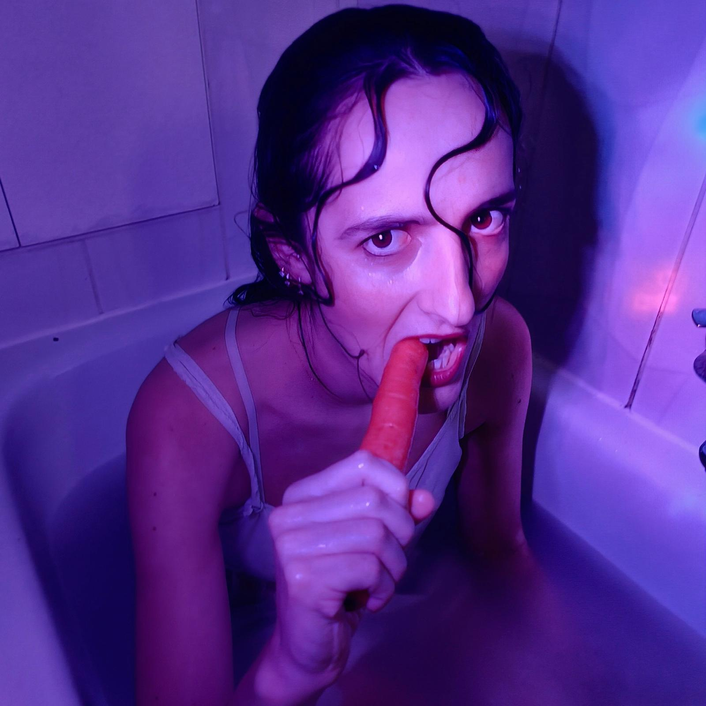

Nos fondateurs

Valérie Pierson
Présidente

Arthur Couvreur
Trésorier
À la rencontre de notre comédienne
Léonore Vanier
Ancienne ingénieure, Lénore a choisi de se consacrer pleinement à sa passion pour le théâtre. Son parcours atypique allie rigueur et créativité, lui permettant d’explorer des rôles avec intensité et sensibilité. Aujourd’hui, elle se dédie entièrement au jeu, portée par l’envie de raconter des histoires et d’émouvoir le public.
Ses performances

Le Bain
Brève description de la performance.

Le Legs (à venir)
Brève description de la performance.